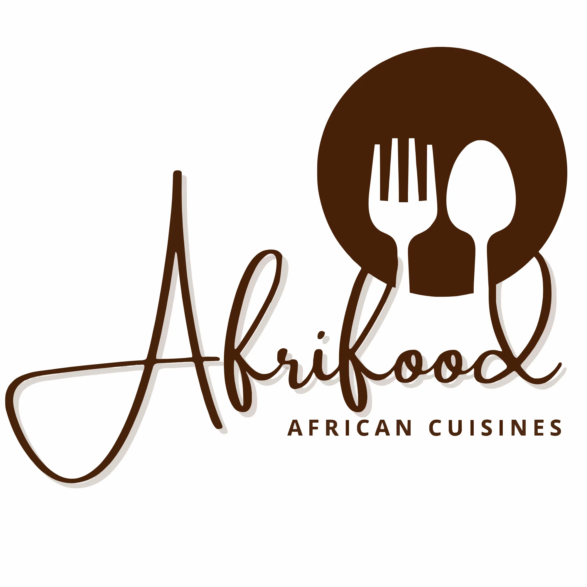
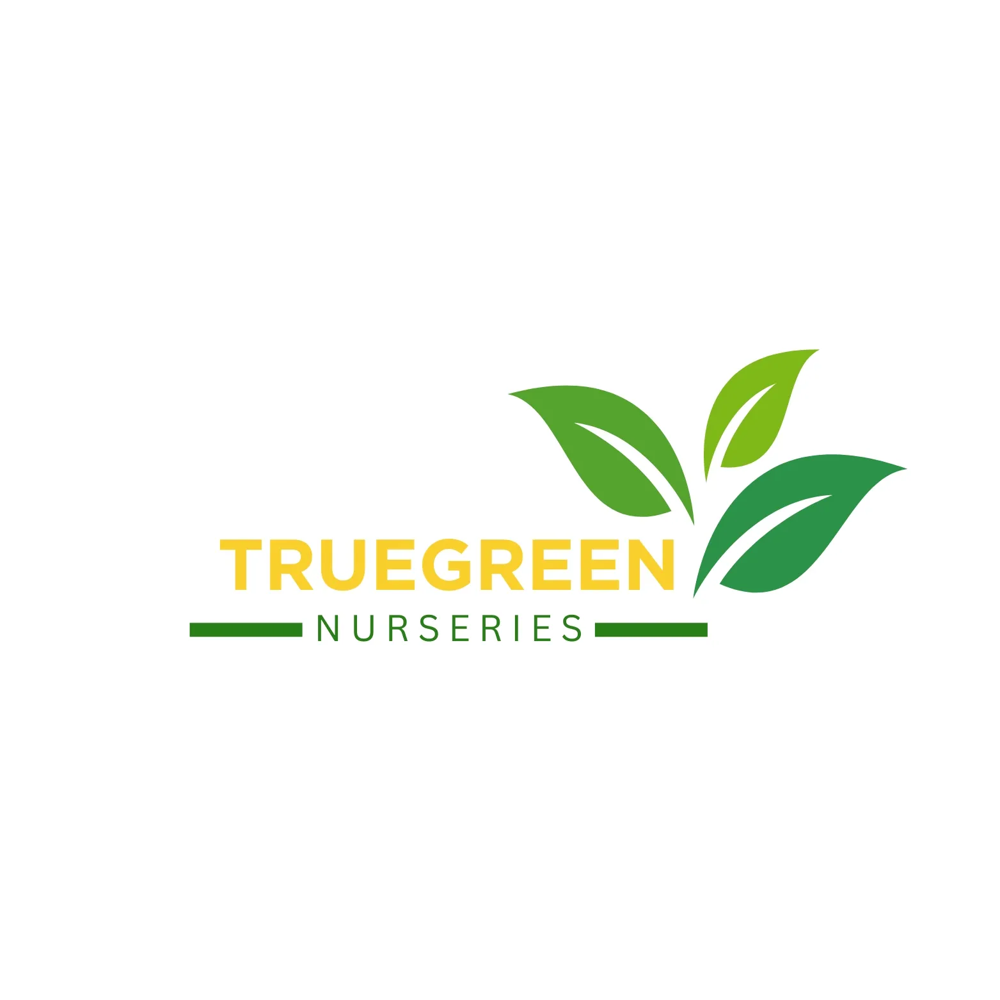
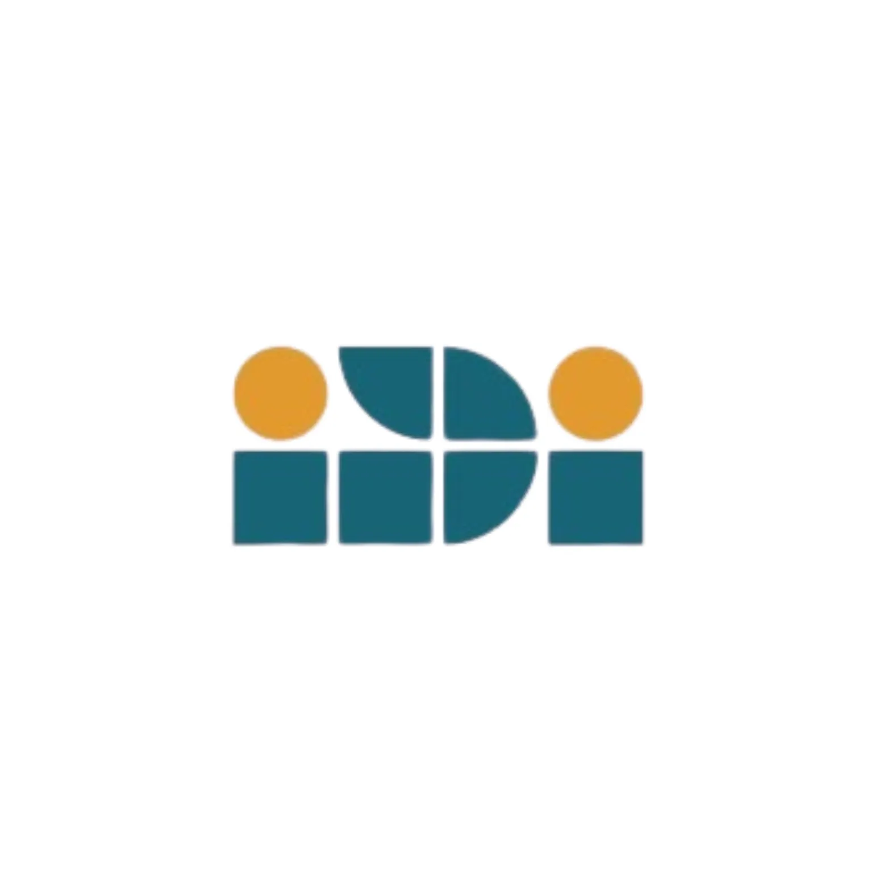

A curated collection of web development projects and graphic design work showcasing technical expertise and creative vision.
Crafting responsive websites, web apps, and mobile applications that merge elegant design with seamless functionality. By prioritizing UI/UX principles, I create intuitive, user-centric systems optimized for every digital experience.

Read Full Case Study →
Crafting memorable brand experiences through thoughtful visual design and compelling storytelling.

A comprehensive brand identity project encompassing logo design, color typography, and packaging concepts.
High-impact poster designs and promotional materials created for community events and fundraisers.

Modern visual design and identity work created to represent cutting-edge educational programs.
Projects that drive real change through technology, design, and community engagement.
Freelance Project
A digital platform built to bridge the gap between traditional African culinary heritage and modern technology, empowering users to discover and master authentic recipes.
Action Lab Africa
Focused on decision intelligence design, specializing in human-centered frameworks that translate complex data into actionable insights.
Junior League of Nairobi
The award-winning Toto Care Box Initiative by the Junior League of Nairobi provides maternal education and essentials to underserved families. It has supported over 1,100 mothers and newborns through the critical first 90 days of life.